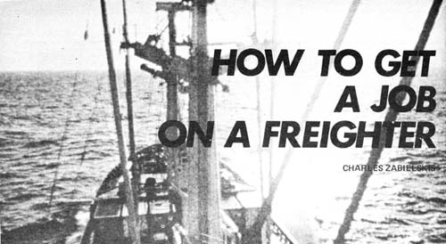

I'm here to tell you that - contrary to popular belief - youcan still work your way to almost anywhere in the world on a freighter. You don't need money, short hair, experience or references. You won't even have to fill out an application! All you'll need is a passport and a vaccination certificate.
There are two good ways for the complete novice to get a job on a freighter. One is by going from ship to ship and asking each captain if he needs (a) a deckboy or (b) a work away. A deckboy is part of the crew and gets paid (although very little) and a workaway gets no wages at all but swaps labor for his passage. Although few companies now accept workaways, some captains will still take one in place of a paid crew member.
Don't waste your time with United States vessels when going from ship to ship unless you're already in the American union (in which case, you probably wouldn't be using this method of locating a job anyway). If you're not a union member, don't bother trying to join; they'll just put you on a waiting list. I was about No. 200 when I first applied and, one year later, they had taken only ten people into the union. Now that the war in Asia is winding down (?-JS), there are a lot of unemployed sailors-and too many union members. So concentrate on foreign vessels.
The second easy beginner's entry to a freighter job is through the Scandinavian Shipping Office. There are only two of these offices in the United States: One is on Pier 29 in San Francisco and the other is at Hansen Place in Brooklyn. When the captain of a Scandinavian ship in our waters needs crew members he calls one of these two offices, and the chances of getting a job this way are probably better than by going ship-to-ship.
The Scandinavian Shipping Office in San Francisco, where I hired on, gives out jobs at 10 a.m. each weekday. Members of the Scandinavian unions are given first preference, experienced nonunion people get second choice and anyone else present can then apply for jobs still unfilled on a first come first served basis. basis.
This puts you on the bottom but-if there's a deckboy opening-you stand a good chance of getting it. A deckboy usually a non-union crew apprentice and his pay ($100 month) is about one-third of a seaman's wages. Only rarely will a Scandinavian union member or an experienced non-member take this job.
Have your passport with you when you go to the shipping office. If you get called, they'll want to see it. If you're aim for a particular place and plan on staying, ask at the US passport office if you'll need a visa. That visa, by the way, will be issued by the foreign country involved and not by the US Government. Most countries have consulates in New York a: . San Francisco (and, sometimes, other cities as well) and only takes a day for most consulates to visa a passport. The proper visa can really save a lot of hassles if you decide to quit ship in a foreign port.
If you're hired at the shipping office you'll be sent for a physical before you board the freighter. In San Francisco, the examination is made at a place called the Overseas Medical Center and it's nothing to worry about. The whole thing takes an hour and is not very rough (I flunked my draft physical but passed this one easily). You'll be given a vaccination and any other shots you'll need for where you're going and it's all paid for by the shipping company.
OK. What are your chances of getting a freighter this way? depends . . . on luck, timing and persistence. I caught a vessel the second day I went to the shipping office . . . and I've met a fellow who tried every day for a month (in the fall, the slowest season of the year) before there was an opening for a deckboy. The best time to try is in the spring or summer. Christmas is also good because many sailors want holiday leave
and there's a big turnover in personnel then. For what it's worth, the New York Scandinavian Shipping Office is a lot busier than the one in San Francisco . . . so your chances might be better in the east coast port.
It's important to be at the shipping office when the assignments are given out (10 a.m. in San Francisco). If you're there at any other time your chances of getting a job are practically zero. And don't be discouraged if you get little information and much run-around from the office personnel: They want to spend as little time as possible talking to inexperienced non-union job seekers. The day I was hired they had told me there probably wouldn't be an opening for another eight months. The sailors are the people to talk to if you want straight information.
The ship I worked on was a 10,000-ton (average size) Danish freighter sailing between the west coast, Australia and New Zealand. It was a fairly new and completely modern ship with a crew's lounge, tiled and panelled passageways and carpeted and individually air conditioned cabins. Deckboys were bunked two to a cabin and there was a desk and individual closets in each room.
Deckboys work either in the pantry or on deck with the crew and I did both for a while.
Working in the pantry is terrible. At 6 a.m. you start cleaning the bathrooms and scrubbing passageways outside the crew's cabins. You also set the tables, bring the food from the galley (which is far away), serve, clear the tables and wash the dishes for all meals and coffee breaks . . . for about 16 people. There's a thousand little hassles and a lot of running involved because the crew wants their meals on time but the cook won't fix chow until the last minute because he doesn't want it served cold. The day isn't finished until after 7 p.m. and it's a seven-days-a-week grind. Even with an hour or two free every afternoon, this is a hard job.
Working out on deck with the able seamen is a lot better. The night watchman wakes the crew at 6:30 a.m. and they meet in the messroom for coffee and start work at 7. Breakfast is served at eight o'clock and there's a coffee break at 10. Twelve to one is lunch time with another half-hour break at 3. The workday is finished at 5 o'clock, Saturdays and Sundays are free and you're entitled to two extra days off each month.
The work on deck is sometimes dirty (cleaning up oil or greasing cables), sometimes heavy (putting away hardware that secures the deck cargo) and most of the time menial (scraping rust and painting). But there are consolations. For one thing, you're out in the sun and clean sea air working more or less on your own and, for another, you're doing something different every day.
A job on a vessel beats most work situations in this country (where workers hate their grind, do the minimum and can't wait for the day to end). On a ship the crew knows what has to be done, they do it right and they take pride in their labor. The situation is very relaxed, everyone works at his own pace, no one is pushed and there's no time clock to punch. It's what gets done -and not time put in-that counts.
"Good, working people" is the best way to describe sailors. The crew I joined was really great . . . not at all like the hard, rough cutthroats I'd imagined. Working on a ship is sometimes dangerous (you can easily get hit by the huge hooks that swing from the cranes or have your fingers squashed in machinery) so crew members always watch out for one another. I was really surprised at the way we all stuck together, especially in port.
Although none of the able seamen had long hair, they accepted mine from the beginning. Apparently, most people making just one trip on a vessel do as little as possible and the other hands liked me because I did my work and did it well. I found it much easier to keep busy than to stand around-bored-doing nothing.
Gradually the crew accepted me as one of their own and we did a lot of rapping (they all spoke good English and one could talk fluently in five languages). Most hands were Danish (one was dodging the draft in Denmark) but the ship's complement also included a Chilean, an Australian, a Swede, an Irishman, a French Canadian and a Greenland Eskimo. They all had interesting stories of the places they'd been.
Life aboard the freighter was good but the routine did get a little boring. We spent our evenings playing cards, reading, writing letters (all postage was paid by the ship) or just sitting in the messroom talking. A movie was shown twice a week while we were at sea. Some of the films were good, most were bad and a few weren't even in English. The chief steward opened the ship's stores twice a week also and we bought things like soap and candy against our pay. Everything was duty free and some of these items were really inexpensive (a carton of cigarettes cost $1.75).
The food was excellent and plentiful and the variety served at each meal was amazing . . . within limits. The Scandinavians are meat, cheese and bread eaters and they don't have much of a sweet tooth. Dessert during the week was fresh fruit with Danish pastry served only on Sundays. Still, even though I ate no meat on the trip, I never once left the table hungry.
Working on a ship, I found, is not at all like being in the navy. Ours was more of a boss-worker than an officer-enlisted man relationship. There were no "orders", "regulations", rank, uniforms or inspections. In warm weather most of the crew-including the captain-went without shirts and wore either shorts or cutoffs. There was practically no tension between officers and crew . . . in fact, we rarely saw the officers during working hours. After work, the seamen and officers treated each other as good friends.
Another major difference between working on a freighter and being in the navy is the fact that you can always quit in the next port if you don't like the vessel. All you have to do is give the captain notice one week before you enter the seaport where you plan to leave ship.
By the way, if you have only limited time for your voyage, don't trust the shipping company's docking schedule. According to the timetable, my round trip was supposed to take six weeks . . . it actually took twice that long. Anything from bad weather to repairs to harbor strikes can and will delay a ship.
In case you're wondering . . . yes, the first day out nearly everyone gets at least a little seasick. It's a nasty feeling but even old salts have it after spending some time ashore. Most people get used to the ship's motion in a day or two and are okay for the rest of the voyage. I was never in a big storm but from what I've heard, they can be pretty miserable.
Nobody on our freighter even mentioned those supposedlyfamous initiation ceremonies held for people crossing the equator the first time. I don't think that ritual is observed on many other cargo ships either. It doesn't seem to fit the peaceful live-and-let-live atmosphere of a working vessel.
To me, that peaceful life is the best part of being at sea: Spending the whole day out in the sun, eating good food, getting plenty of sleep, never having to rush or run around and not having to cope with radio, television, newspapers or uptight people.
Instead, there is the sky and the sea. The horizon stretches for three-hundred-sixty-degrees and the sunrises and sunsets near the equator are fantastic. There are waves, porpoises, flying fish, seagulls and albatrosses but-two thousand miles from land-virtually no pollution. The stars shine so brightly they're like holes in the sky and their light is so strong that it actually reflects from the waves.
|
 |
|
|